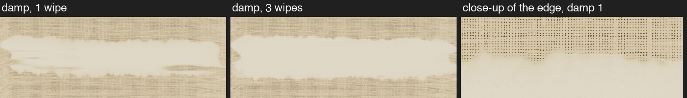
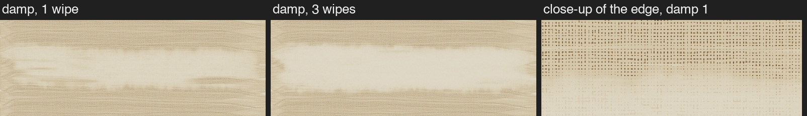

BMild
Removed: 81% after 1 wipe, 93% after 3.

Version 4 from round 1 for the dry rag. Same thin raw umber wash, same rag, same path. Only the damp rag changes. The close-ups show the bottom edge of the wipe near its right end.
• With spirits on the rag you rub the paint off gradually, over a few passes, until the canvas looks white.
• Keep the rag barely damp: too much spirits makes the paint run and leaves soft, muddy edges.
• Canvas weave holds pigment, so canvas takes more passes than a smooth panel.
Removed: 97% after 1 wipe, 99% after 3. Almost everything in one go, with a hard, lumpy edge.

Removed: 81% after 1 wipe, 93% after 3.
Removed: 86% after 1 wipe, 95% after 3.

Not modeled yet: spirits running into the paint beside the wipe (the "muddy edge"). All numbers are guesses to compare by eye. The code and settings: rag::tests::thin::damp_render.